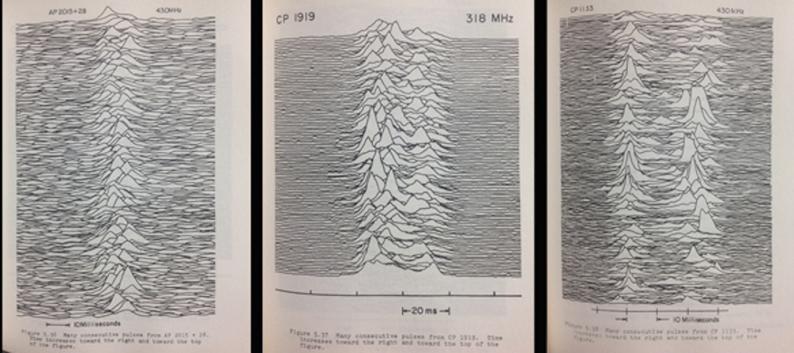
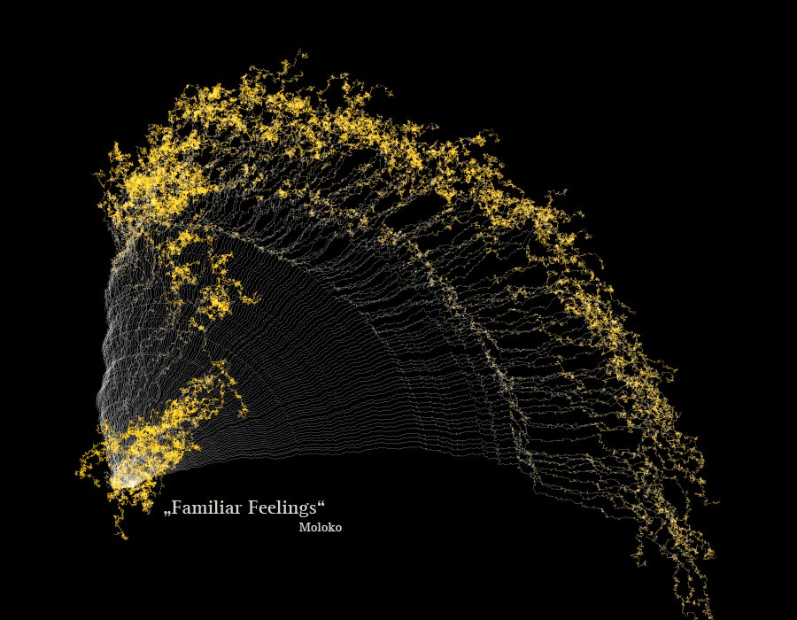
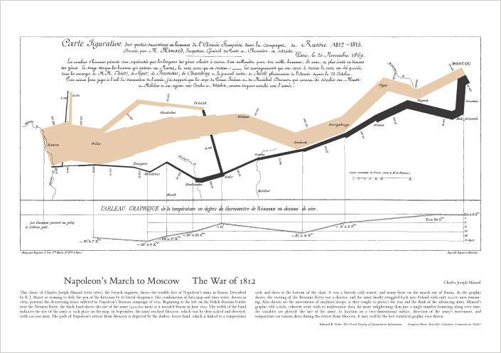
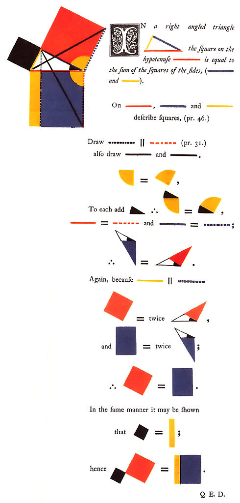
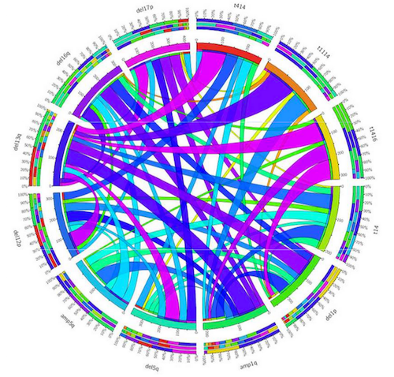
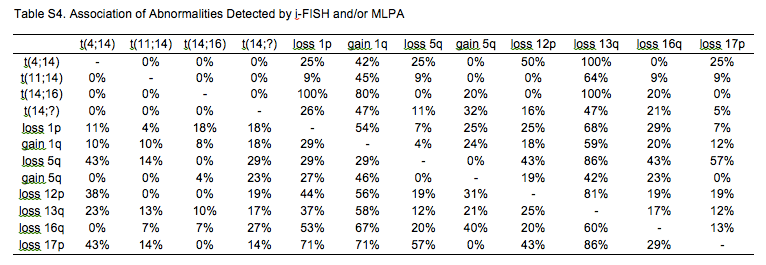
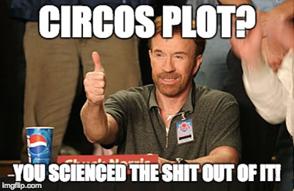
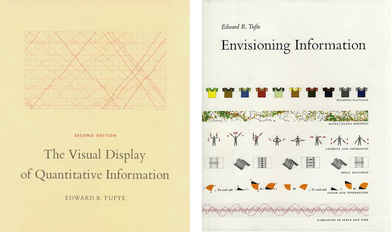
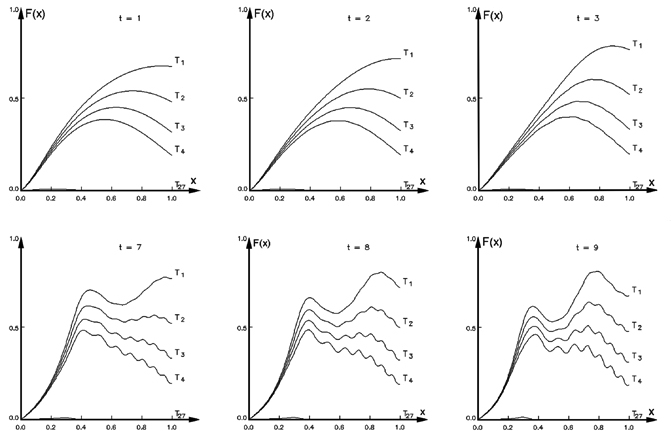

This is a transcript of a talk I gave at BioJS 2015, a BioJS conference on July 3rd 2015, the theme of the conference was BioJS for visualisation and I was given free rein to talk about what I liked. I'm not a full time BioJS or visualisation developer, but I do consume a lot of visualisations and have done for a while now so I've got a lot of opinions. I thought that a lot of the BioJS developers would come from a more programming background than one that is concerned with understanding biology, so I thought I'd spend time discussing what works for me and what doesn't in visualisations.

Source: Radio Observations of the Pulse Profiles and Dispersion Measures of Twelve Pulsars, Harold D. Craft, Jr. (PhD Thesis, September 1970 pages 214-216), Cornell University
I am a biologist by training and a bioinformatician by profession. I've spent a lot of my time looking at pictures of data rendered by my own and other people's software. And as BioJS is at a great place right now, I thought I'd take this opportunity to get on my high horse basically and tell you how I think that the visualisations I've come across have succeeded and failed in their apparent tasks and hopefully seed some discussion about what you, the developers of BioJS killer visualisation apps will be making! This picture is of radio signals from a pulsar star that was prepared for a PhD thesis and made it's way to the cover of the album Unknown Pleasures by a band called Joy Division.
Data Driven Journalism
So the first thing I want to consider is what for me is the reason for having a visualisation in the first place - a visualisation is a form of communication, a way of expressing the story the data has in it. Its not fanciful or fictional expression though, it isn't an artistic interpretation. Some visualisations really blur the lines between data and artistic interpretations, like this one

Source: Narratives 2.0 matthiasdittrich.com
which is a visualisation of the channels of a song split into seperate lines and the offset angle representing the frequency of sound in the channel with high frequencies tipped in orange. It is very pretty indeed but the best result in a scientific visualisation is not about the visual alone, its in part about the story from the source data.
And this visualisation tells a magnificent story, an epic one, one of futility, one of death.

Source: Napoleon's March to Moscow - Charles Minard via Tufte
The line represents the strength of Napoleon's army as they marched across Russia. It tells its own tale, such is the power of the visualisation, but its really just a tale of statistics, its just about the change in army size by position.
A strong visualisation can express abstract concepts as well as narratives. This figure expresses in an immediate way the truth of Pythagoras' theorem, it's a visual proof that conveys much more than a long-winded and dry algebraic one.

Source: Oliver Byrne's Elements of Euclid, Taschen
So a good visualisation is a writer's tool. It can be thought of as a form of journalism driven by data.
The thing about these and all successful visualisations is that they don't just pop into existence, there is a process of drafting that builds on a previous, presumably less satisfactory visualisation. The story needs to be unearthed as you go along. No one will know what the story is until they've investigated the data, and this is exactly where visualisation tools and data investigation tools comes in.
You are building the tools for another scientist to find the story
The role of BioJS in visualisation then is clear, BioJS is about the tools for allowing someone else to find the story in the data. As a developer you're not trying to encapsulate a story, you are not creating a visualisation in itself - you have a more important task. You're there to build the thing that will help the biologist discover the meaning in the data, and from which they can build the visualisation.
So if you and I are going to get on, BioJS and you are going to produce the sort of tools that someone like me can use I thought it would be worth looking at what might make a visualisation succeed and what are the techniques that have been developed to that end, and that's what I'll do in the main part of this talk, some of this is going to be accepted wisdom, some of it will just be stuff that I think is cool or has been crap. I'll start with the stuff that really, I never got. Some stuff that made me confused when I thought it was supposed to be enlightening me.
Circles. Everywhere.

Take a look at this thing. The bits around the outside are either chromosome regions or genes and the ribbon links the level of association of abnormalities detected between them by fluorescent in situ hybridisation. So when I see this I instantly get one thought and it's this one

I don't know what Im looking at. Which isn't helpful. The visualisation fails on that score, there is nothing here but a mess and I, at least am left with the feeling that getting any message or story out is going to be a bit like reading the tea leaves in a drained cup. Which isn't very helpful at all. Let's look at it again.

It is ugly, which is the least of it, you might be thinking that it's unfair to judge until you've read the legend, well arguably having to need a big legend to work out the gross picture is probably a failure in itself, but lets see, it says only:
In the inner ring, the width of each colored ribbon is proportional with the frequency of other (paired) lesion within the group harboring the particular aberration. The exact frequency values are indicated around the inner ring. A gradual transition of colors (from lilac to orange) also refers to the various strengths of associations. Circos plot was generated based on data presented in Supplementary Table 4.
Two things.
They say -'A gradual transition of colours from Lilac to Orange'. Because everybody knows and can easily interpret lilac to orange colours, right?
Lilac = 37 %. An international standard.
So there's nothing wrong with that. Honestly, Im not sure what colour lilac actually is. It's a bit like a pale purpley colour right?
Second they say - 'Circos plot was generated based on data in Supplementary table 4. This is that table,

in which it is easy to see what the level of similarity is. The table from which they generate the plot is easier to understand than the visualisation. Which is a significant failure.
So the circle visualisation is horrid. It's illegible. It is meaningless because it tells no story and it is worse than the table it came from. It's a circle for no good reason and in fact it's more than a circle, it's a Circos plot. I expect you are familiar with Circos. It gets used a lot especially in genomics, and partially because of Circos, circles are cool. But perhaps they shouldn't be. And this bad visualisation exists because Circos is cool and the authors couldn't bear to give up the idea of making a plot.
The whole plot is a UUOC - useless use of Circos

None of this is Circos' fault. Circos didn't make those authors produce the plot like that. But it is a powerful system that gives them absolute control over what they were producing.
The power and flexibility of Circos is very impressive and it has impressed us all with that power so people who don't know better are misusing it. Just like they do with older plotting tools. It may be heresy to say so, but Circos has gone someway to become the new Microsoft Excel. So this is a warning for any future BioJS visualisation developer - one of the things that Bio JS visualisations must do to avoid becoming another abusable visualisation system is take care to provide the constraints in the tools that prevent that from happening. Thankfully, these constraints aren't really constraints - in the sense of forbidding people from doing what they want to, they're really rules that provide boundaries within which great stuff can emerge.
Principles of clear communication
'Perfection is achieved not when there is nothing more to add, but when there is nothing left to take away.'
Antoine de Saint-Exupery
There are a lot of style guides for writing and many writers have spoken in favour of simplicity for clarity. The basic philosophy behind this is that clarity of writing follows clarity of thought, and that there is an analogue for understanding, clarity of understanding follows clarity of seeing or presentation.
Which is roughly the same as 'less is more', but it's not just that, its about simplicity and economy. Here's the obligatory pie-chart bashing slide that conveys a good idea of how you get to clarity.

Source: darkhorseanalytics.com
{kind=link}
Read Edward Tufte. Soon.

Not surprisingly, a number of very smart people have looked into this, I imagine a lot of you already know Tufte, but these two books are the bare minimum read on what constitutes a good graphic so you should read them if you haven't yet. One of the central concepts that Tufte talks about for achieving clarity is the reduction of 'data-ink', this is the idea that you don't waste printing ink on stuff in the chart that isn't data. And this is a really solid concept to work by. But one significant difference between the Tufte way of doing things and the way BioJS will be doing things is that BioJS won't be needing so much ink. Or probably any. Graphics on the web have some strong advantages. And as a user of visualisations I'd like to mention briefly the ones that really make my life a lot better.
The main difference between the Tufte world and the web world is that with the web, clearly, you don't have just one flat page. You have many layers that can be hidden initially, that you can drill down through and add stuff on demand. In particular, things like precise values, scale changes, filters, tools that increase specificity from a general picture to a well defined subset are good.
Things I Love
Data filters
Data filters are great. Taking away datapoints or even entire datasets is a real advantage that do the absolute most to simplify a dataset. Just help me get rid of the stuff that isn't immediately relevant.
Mouseovers
These are a killer, I love these. And these can be so much more than tool tips, they're a great data-hunting device and are perfect for people like me who are always forgetting which thing in a busy plot is which.
Data export.
A really great thing, especially if it is an export of the data currently visible. This kind of takes us away from the vis itself, but it does link us to the outside world, which any interactive vis should do.
Just enough stuff
And any visualisation that is conscientious enough to only show me the relevant data first and not bombard me with visual info is going to get a big plus mark. So by this I mean when you're showing me say a scatter plot, don't throw hundreds of colours of data points at me, maybe let me decide on the colours as we go along.
Small Multiples
Side by side comparisons of different aspects of the data using a repeated plot style are always something really useful too. This is a common thing among visualisations, Tufte calls them small multiples, in other places they get called facets or trellises. But they aren't subplots, I'm not talking about Figure 1 part a, figure 1 part b that may have different data sources. These small bits contain the same classes of data variable, but with different values. These come into their own as a place in which you can see extra dimensions of change unfold. Being able to generate these as you go along, so perhaps in new dynamically generated panels is very helpful.

Source: Ronald D. Kriz, Engineering Science and Mechanics, Virginia Tech, Virginia, USA
And stuff I wouldn't bother with
No mobile, thank you.
And finally, then. I know you're JavaScript developers, but could you do us a favour and pretend that mobile devices don't exist. I've never seen a useful vis on a mobile platform and I think it really detracts time and effort away from the main job. This is really just to let you know, I've never met anyone who thought it was a killer feature.
And no 'resubmit' either!
I'm sure you aren't going to do this to me. Being JavaScript types and presumably all AJAX'd and asynchronous and all but please don't send me back to the start with 'resubmit' buttons. Nothing makes a visualisation and analysis tool feel clunkier than sending me back to the start. At the very least, actually, I find the flash as the screen re-draws to be enough to completely wreck my thought process as I try and work out what everything is again. Please don't do that and then introduce a thirty second wait while your tool goes to do calculations on a server. Please.
In brief
- Don't give me all the power. I'll mess it up.
- Do help me to find the story in my data
- This will mostly be done by helping me hide things I don't need right now
So thats all I wanted to rant about really. I hope this hasn't been too much 'old news' to most of you.
Acknowledgements
Every scientist who ever made a figure that I happened to see.
Postscript
I never used this picture in the talk, but I tried really hard to find a place for it.